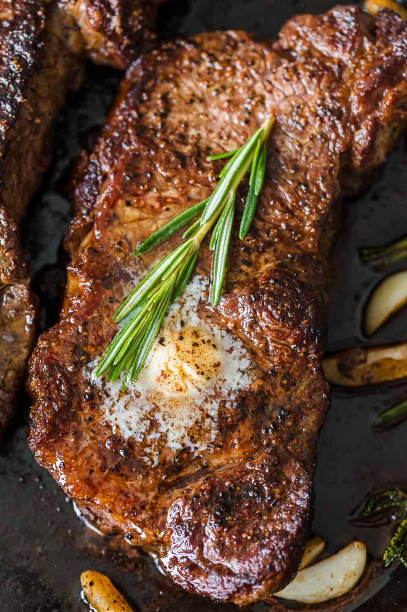

Apple Pie
Origin: United States Source: Family Recipe Category: Dessert
Serve up this easy apple pie and enjoy the most classic dessert with family and friends.
Recipe Ingredients
- 1 box (14.1 oz) refrigerated Pillsbury Pie Crusts (2 Count), softened as directed on box
- 6 cups thinly sliced, peeled apples (6 medium)
- 3/4 cup sugar
- 2 tablespoons all-purpose flour
- 3/4 teaspoon ground cinnamon
- 1/4 teaspoon salt
- 1/8 teaspoon ground nutmeg
- 1 tablespoon lemon juice
Recipe Steps
- Heat oven to 425°F. Place 1 pie crust in ungreased 9-inch glass pie plate. Press firmly against side and bottom.
- In large bowl, gently mix filling ingredients; spoon into crust-lined pie plate. Top with second crust. Wrap excess top crust under bottom crust edge, pressing edges together to seal; flute. Cut slits or shapes in several places in top crust.
- In large bowl, gently mix filling ingredients; spoon into crust-lined pie plate. Top with second crust. Wrap excess top crust under bottom crust edge, pressing edges together to seal; flute. Cut slits or shapes in several places in top crust.
Additional Food images


Fried Rice
Origin: China Source: Family Recipe Category: Main Course
Fried Rice is a combination of long grained rice, mixture of warm peas, carrots and onions with scrambled eggs mixed all together! You will not be getting take out any longer!
Recipe Ingredients
- White long grain rice
- Small white onion
- Vegetables- Peas and Carrots
- Eggs
- Sesame Oil
- Soy Sauce
- Green Onions
Recipe Steps
- Preheat Skillet. Turn your skillet to medium high heat and pour sesame oil into the bottom of your skillet and add the onion, peas and carrots. Fry this until they are tender.
- Slide the veggies to the side. Pour the beaten eggs onto the other side. Use a spatula to scramble the eggs. Mix them together with the veggies.
- Add the rice. Combine it with the veggie and egg mixture. Pour the soy sauce on top and stir until it is heated throughout. Garnish with green onions.
Additional Food images

Double Chocolate Cookies
Origin: Michigan Source: Family Recipe Category: Dessert
My daughter learned to make these cookies at a baking camp at Zingermanns and has tweaked the recipe to fit the taste buds of her siblings. They are extremely sugary so the salt helps to balance it. Note, these cookies are best eaten very quickly.
Recipe Ingredients
- Unsalted butter
- Granulated Sugar
- Packed light or dark brown sugar
- Large egg
- Pure vanilla extract
- Semi-sweet chocolate chunks (melted)
- All-purpose flour
- Natural unsweetened cocoa powder
- Baking soda
- Salt
- Semi-sweet chocolate chunks
Recipe Steps
- In a mixing bowl cream together the butter, granulated sugar, and brown sugar
- Add the egg and vanilla extract and beat well
- Add the melted chocolate
- In a separate bowl combine the flour, baking soda, cocoa powder and salt
- Combine the wet and dry ingredients
- Add the unmelted chocolate chunks.
- Form 15 cookies and place on a baking sheet.
- Cook for 12 to 13 minutes at 350 degrees.
Additional Food images


Seared Steak
Origin: Europe Source: Family Recipe Category: Main Course
As everyone is staying home, working from home and homeschooling, people are cooking way more often and looking to improve their cooking skills. You all have been asking for more simple and delicious recipes that come together fast and have minimal ingredients. This steak recipe is so satisfying and will impress your entire family.
Recipe Ingredients
- 2 New York Strip Steaks, each weighing 1 pound and 1 1/4" thick
- garlic
- black pepper
- butter
Recipe Steps
- Heat it until 145 degrees F and then remove it from the pan.
- Let it rise to 150-155˚F as it rests.
- Get Medium Rare steaks in the plate
Additional Food images

Chicken Curry
Origin: India Source: Family Recipe Category: Main Course
Indian-inspired creamy chicken curry recipe is similar to a curry I had in India. The aromatic spices and flavors are a delight to the senses! Delicious with fresh naan and basmati rice.
Recipe Ingredients
- 3 tablespoons olive oil
- 1 small onion, chopped
- 2 cloves garlic, minced
- 3 tablespoons curry powder
- 1 teaspoon ground cinnamon
- 1 teaspoon paprika
- 1 bay leaf
- 1/2 bay leaf
- 1/2 teaspoon white sugar
- 2 skinless, boneless chicken breast halves - cut into bite-size pieces
- 1 tablespoon tomato paste
- 1 cup plain yogurt
- 3/4 cup coconut milk
- 1/2 lemon, juiced
- 1/2 teaspoon cayenne pepper
Recipe Steps
- Heat olive oil in a skillet over medium heat. Sauté onion until lightly browned.
- Stir in garlic, curry powder, cinnamon, paprika, bay leaf, ginger, sugar, and salt. Continue stirring for 2 minutes.
- Add chicken pieces, tomato paste, yogurt, and coconut milk. Bring to a boil, reduce heat, and simmer for 20 to 25 minutes.
- Remove bay leaf, and stir in lemon juice and cayenne pepper. Simmer 5 more minutes.